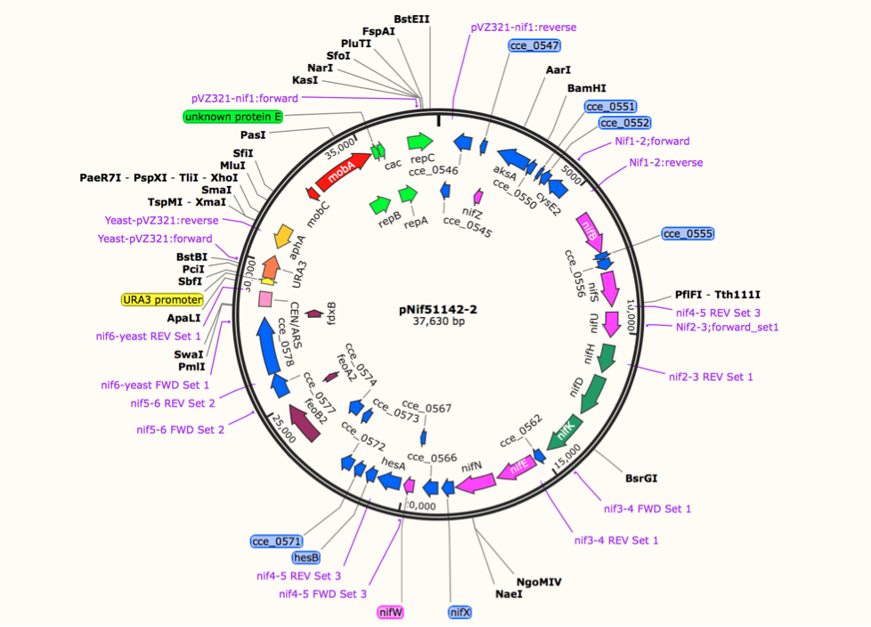

This form will open your default mail client (i.e Outlook). If you do not have one installed, email us at WashU iGEM washu.igem@gmail.com
2014 iGEM Project
Fixing Nitrogen and Sensing Light
What was our goal?
There were two key components of our project:
Richard and Caroline were working in the Pakrasi lab, and had been using genes from cyanobacteria to get nitrogen fixation working in E. coli. They were testing nitrogen fixation by running acetylene reduction assays and designing experiments to test the optimal criteria (ie. E. coli strains, temperature, nitrogen source) to get maximal results.
Ben and Jeffery worked in the Moon lab, and cloned plasmids to create a system that represses and expresses a fluorescent protein with the presence and absence of light, and were running experiments to test the induction levels compared to various positive and negative controls.
Phase 1: Electro-Transformation of plasmid pNif51142 into E. Coli strains
- 2014

To successfully transform pNif51142, we used Electro-Transformation, also known as Electroporation. Electroporation provides a method of transforming E. coli to efficiencies greater than are possible with the best chemical methods. By subjecting mixtures of cells and DNA to exponentially decaying fields of very high initial amplitude, we were able to deliver the plasmid into all of E. coli strains that were tested in the project.
Results
According to the gel running and antibiotic testing, bands in the gel and the survival of all strains transformed in antibiotic Kanamycin (there was an cluster of Kanamycin-resistant marker gene in sequence of pNif51142) both prove that the Electro-Transformation was successful.
Phase 2: Determine the optimal conditions for cell survival with plasmid pNif51142 in E. Coli
- 2014
Due to the oxidative properties of oxygen, most nitrogenases are irreversibly inhibited by dioxygen, which degradatively oxidizes the Fe-S cofactors. This requires mechanisms for nitrogen fixers to protect nitrogenase from oxygen in vivo. Hence in our experiment, we firstly selected anaerobic condition as part of preparation step for the nitrogenase activity testing
Strains of e. Coli: JM109, BL21(DE3), WM1788, Top 10 DH5Α
Target Strain
JM109
BL21(DE3)
WM1788
Top 10
DH5Α
Experimental Plates
JM 109 strain w/ plasmid
Antibiotic
BL21(DE3) strain w/ plasmid
Antibiotic
WM1788 strain w/ plasmid
Antibiotic
Top 10 strain w/ plasmid
Antibiotic
DH5α strain w/ plasmid
Antibiotic
Positive Control
JM 109 strain w/o plasmid
No antibiotic
BL21(DE3) strain w/o plasmid
No antibiotic
WM1788 strain w/o plasmid
No antibiotic
Top 10 straing w/o plasmid
No Antibiotic
DH5α strain w/o plasmid
No antibiotic
Negative Control
JM 109 strain w/o plasmid
Antibiotic
BL21(DE3) strain w/o
plasmid
Antibiotic
WM1788 strain w/o plasmid
Antibiotic
Top 10 strain w/o plasmid
Antibiotic
DH5α strain w/out plasmid
Antibiotic
Results
In the minimal M9 media, all possible combinations of parameters listed above were tested.
None of the concentrations of glucose had any affect on the growth of E. coli. It was expected that as the concentration of glucose increased, the growth of E. coli also increased. However, the variation between the concentrations of glucose may have been too small for a noticeable increase in E. coli growth as the concentration of glucose increased. Also, even the maximum concentration of glucose tested, 100mM, may have been too low to affect the growth of E. coli to an observable extent. Eventually, 10mM was determined to be the optimal glucose concentration for the purpose of least interference possible in solution.
NH4Cl as minimal nitrogen source was proven to be not suitable for E. coli growth at any concentration as the OD600 testing results showed that cell density didn’t change throughout the time. It was probably due to the permeability of cell membrane was limited for NH4+ and Cl- ions. Eventually Glutamate at concentration of 10mM supported cell growth the best and thus chosen as part of optimal environment condition.
With CASAmino solution’s buffering utility, the pH was controlled little bit below 7 but close to 7.
To protect the iron core of the nitrogenase, temperature of 30°C and Anaerobic were both determined not for cell growth but for nitrogenase activity testing, which is the next phase.
Phase 3: Measurign nitrogen fixation activity under determined optimal conditions in E. Coli Strains.
-2014
We used an Acetylene Reduction Assay to examine the nitrogenase activity for JM109, BL21(DE3), Top10, DH5α at different cell density referred by OD600 values.
Acetylene (C2H2) has an triple bond similar to that of atmospheric nitrogen (N2). Because of this structural similarity, the nitrogenase enzyme can cleave the triple bond in acetylene just as it would cleave the triple bond in N2. Ethylene (C2H4) is produced from this enzymatic activity, so a gas chromatograph can be used to detect the presence of ethylene and, consequently, nitrogenase activity.
Results
Of the five E. coli strains tested, JM109 and WM1788 showed strongest nitrogenase activity.
The linear relationship between nitrogen fixation activity and time matches that seen in nature.
Optimal conditions determined:
Glucose as carbon-source
glutamate as nitrogen source
LB as inoculating media
minimal M9 as testing media for GC assay
anaerobic enviornment
30°C during the overnight preperation
Phase 4/5 Computationally Modelling an E. Coli system that has Nitrogen Fixation (Penn) and Targeting Nif genes for Overexpression and Silencing (WashU)
While last year’s team was able to take the nif cluster from a cyanobacteria and get it to function in E. coli, nitrogenase activity was minimal. This year’s team is dedicated to increasing the nitrogenase activity of E. coli with the nif cluster from Cyanothece 51142. The team members at Pennsylvania State will use high level computational modeling to optimize metabolic pathways within E. Coli, which will relieve the strain of nitrogen fixation. The team members at Washington University will create a minimal nif cluster of only those genes necessary for nitrogenase production and activation. In addition, they will silence and overexpress several genes in order to maximize nitrogenase activity.
In doing such, we hope to create a system for nitrogen fixation for transformation into a photosynthetic system. After we come to a greater understanding of how the system works and perfect it, we can move on to working in a more complex organism, such as a cyanobacteria like Synecosystisspp. 6803.
The end goal is to create plants that can fix their own nitrogen by moving from the cyanobacteria into the chloroplast of the plant. Endosymbiotic theory postulates that cyanobacteria are the ancestors to chloroplasts, so this is the natural progression.
The Big Picture
Haber-Bosch is so 1909
Why are we doing this project
Synthetic biology is an exciting area of research that aims to genetically improve organisms to make them more efficient and hopefully more useful to us as well. The human population in 1950 was 2.5 billion, yet it is predicted to surpass 9 billion by 2050. Even with population growth slowing, increasing life spans and standards of living will soon tax our natural resources. One of the most concerning is our food supply. The agriculture industry needs a revolution in order to keep up with our expected growth rates. Currently about 80% of chemically fixated nitrogen is used as agricultural fertilizers, the majority in developed lands . Intracellular nitrogen fixation in crops could help to sustain the burgeoning world population, especially in areas with less fertile soil without taxing the planet’s waterways. The exponential increase in nitrogen fertilizer has led to more runoff into rivers and oceans. Fertilizers then provide nutrition for algal blooms that result in hypoxia and form oceanic dead zones. These dead zones lead to the death of marine species and have potentially large economic consequences.
The ramifications of nitrogen fertilizer runoff can be averted by genetically engineering plant crops to fix their own nitrogen. Some cyanobacteria fix nitrogen for nutritional needs, while most organisms can only acquire it from the food it consumes. Synthetic biology allows us to transfer this ability to fix nitrogen to a heterologous host that has many genetic tools, Escherichia coli, so that we can learn how to give single cell organisms, and eventually chloroplasts the ability to create their own nitrogen fertilizer.
Diazotrophic (organisms that fix nitrogen) cyanobacteria such Nostoc Punctiforme or Anabaena use heterocysts (specialized nitrogen fixing cells) to create a mini-anaerobic environment to aid nitrogen fixation. However, Cyanothece 51142, a non-heterocyst, fixes nitrogen in the same cell as photosynthesis by relying on a circadian metabolic process, when there is less oxygen byproduct from photosynthesis. This process is both fascinating and necessary since the key enzyme in nitrogen fixation, nitrogenase, is poisoned by oxygen. Our goal this summer is to engineer the regulation of the proteins necessary for nitrogen fixation so that they are highly repressed when activated by broad spectrum light (such as the sun), and are highly active when there is no light around, mimicking the cycle where photosynthesis occurs during the day and nitrogen fixation occurs at night.


 TODO impement this page
TODO impement this page